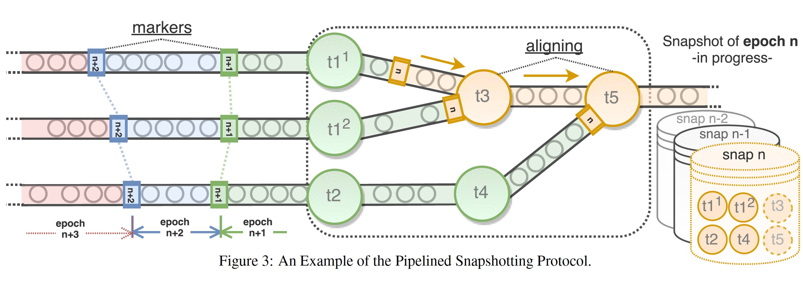

State Management in Apache Flink
PVLDB, Aug 2017
https://dl.acm.org/doi/10.14778/3137765.3137777
流处理除了需要具备可扩展和低延迟的特性，一个日益增长的需求是强一致性保证和对集群配置变更、patch、故障的适应性。Flink 提供的轻量分布式快照机制保证应用状态的一致性，且不影响应用程序的持续执行。
Flink 状态管理的核心建立在分布式快照之上，分布式快照能够将分布式进程回滚到之前全局一致的执行状态，这种回滚是粗粒度的，可用于解决配置变更、容错和版本管理等问题。
Distributed snapshotting protocols enable rollback recovery by producing a correct, complete state replica of a distributed execution which can be used to restore the system to an earlier point in time.
Flink 的分布式快照在 abs 中有所介绍，类似 chandy-lamport 算法，不过更适合弱连接的数据流图。
Weakly connected graphs are inherently relevant to distributed dataflow processing systems.

Flink 的算子可以维护一些状态，包括 Keyed-State 和 Operator-State，Keyed-State 通过 Key-Groups 分配到不同的 physical task，而 Operator-State 存在于每一个 physical task。
Operator State (or non-keyed state) is state that is is bound to one parallel operator instance.
Keyed-State 在任务伸缩的时候能够重新分配，因而能适应 subtask 数目的变更，Flink 支持的 Keyed-State 包括:
- ValueState
- ListState
- ReduceState
- MapState
Pipelined Consistent Snapshots
一个分布式流任务可以被定时生成的 markers 切分为不同的 epoch，如下图所示:

当一个 task 有多个 input 的时候，需要进行 alignment，如上图中的 t3 和 t5，快照的执行由 JobManager 协调，JobManager 保存快照的元数据信息，如快照的目录位置，JobManager 可以将关键的元数据信息保存到 Zookeeper 来保证高可用，元数据的上传可以是异步的，因为总能保证能够回滚到一个更先前的快照版本。
Flink 的快照算法还依赖以下三个假设:
- Input data streams are durably logged and indexed externally allowing dataflow sources to re-consume their input, upon recovery, from a specific logical time (offset) by restoring their state.
- Directional data channels between tasks are reliable, respect FIFO delivery and can be blocked or unblocked.
- Tasks can trigger a block or unblock operation on their input data channels and a send operation (records or control messages) on their output channels.
有向无环图的 alignment 算法如下:

有环图则通过 IterationHead 和 IterationTail 隐式任务支持。任务可以设置忽略 aligment 来支持 Relaxing Consistency。
Flink 任务的配置修改遵循 checkpoint-stop-modify-restore 的模式。
算子支持 Local state 和 External state，状态可以被声明为 Queryable State 被外部访问。
Flink 任务依赖分布式快照算法，支持 at least once 的语义，如果要支持 exactly once 语义，则需要 sink 端为 Idemponet Sinks 或 Transational Sinks。